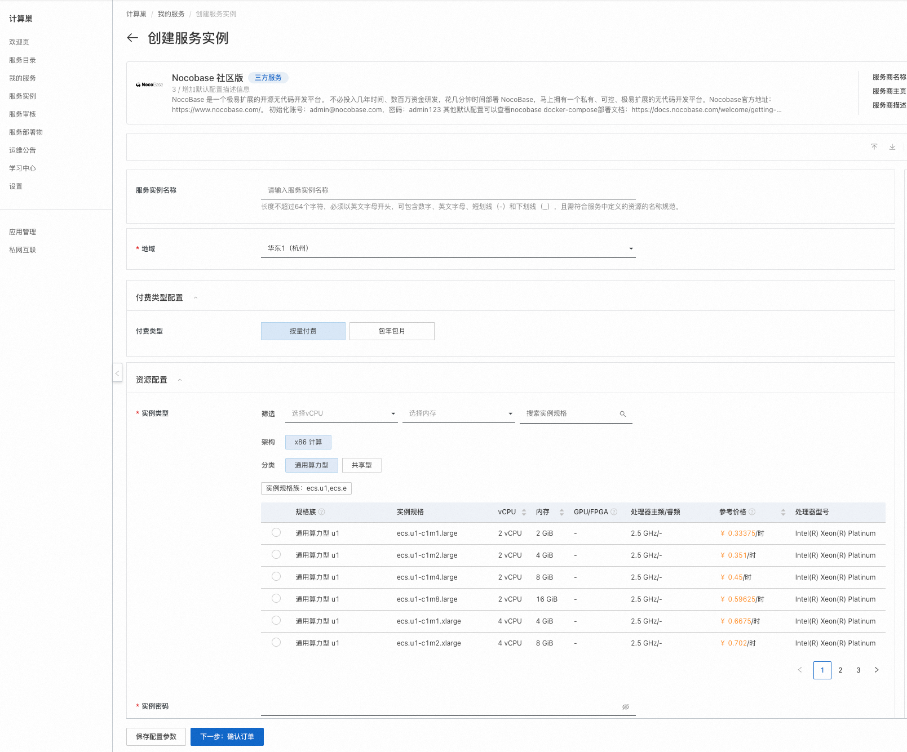
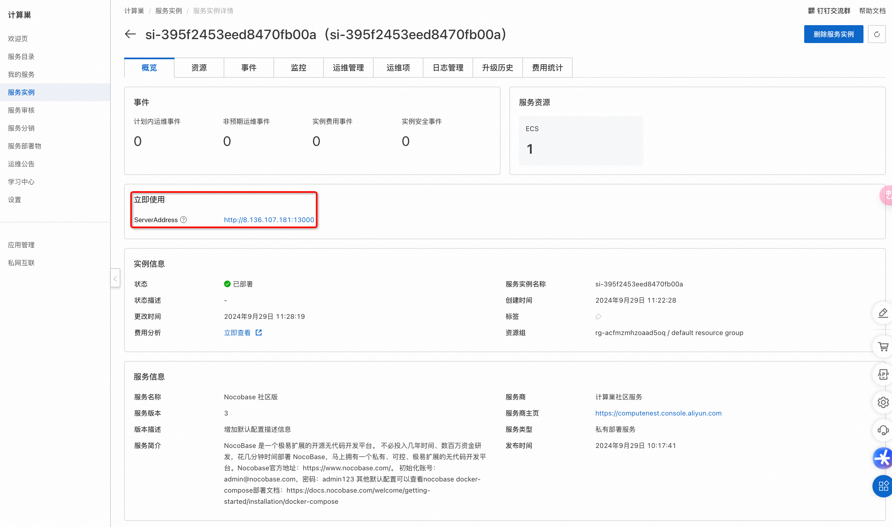
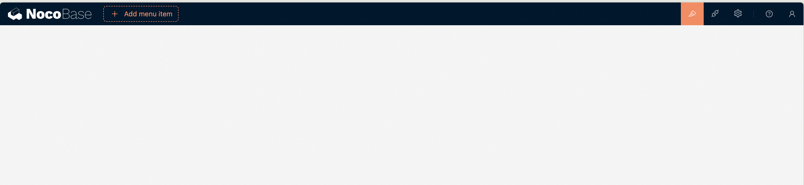

# 快速部署 Nocobase 社区版
服务说明
NocoBase 是一个极易扩展的开源无代码开发平台。 不必投入几年时间、数百万资金研发，花几分钟时间部署 NocoBase，马上拥有一个私有、可控、极易扩展的无代码开发平台。
Nocobase官方地址：https://www.nocobase.com/ 。
服务架构
此服务模板构建出的服务的部署架构为单机ecs部署。

计费说明
用户部署构建出的服务时，资源费用主要涉及： - 所选ECS实例规格 - 磁盘容量 - 公网带宽
计费方式包括： - 按量付费（小时） - 包年包月
预估费用在部署前可实时看到。
RAM账号所需权限
此服务模板构建出的服务需要对ECS、VPC等资源进行访问和创建操作，若使用RAM用户创建服务实例，需要在创建服务实例前，对使用的RAM用户的账号添加相应资源的权限。添加RAM权限的详细操作，请参见为RAM用户授权。所需权限如下表所示：
| 权限策略名称 | 备注 |
|---|---|
| AliyunECSFullAccess | 管理云服务器服务（ECS）的权限 |
| AliyunVPCFullAccess | 管理专有网络（VPC）的权限 |
| AliyunROSFullAccess | 管理资源编排服务（ROS）的权限 |
| AliyunComputeNestUserFullAccess | 管理计算巢服务（ComputeNest）的用户侧权限 |
| AliyunComputeNestSupplierFullAccess | 管理计算巢服务（ComputeNest）的服务商侧权限 ｜ |
服务实例部署流程
部署参数说明
| 参数组 | 参数项 | 说明 |
|---|---|---|
| 服务实例 | 服务实例名称 | 长度不超过64个字符，必须以英文字母开头，可包含数字、英文字母、短划线（-）和下划线（_）。 |
| 地域 | 服务实例部署的地域。 | |
| 付费类型 | 资源的计费类型：按量付费和包年包月。 | |
| ECS实例配置 | 实例类型 | ECS实例规格配置。 |
| 实例密码 | 长度8-30，必须包含三项（大写字母、小写字母、数字、 ()`~!@#$%^&*-+=|{}[]:;'<>,.?/ 中的特殊符号）。 | |
| 网络配置 | 可用区 | ECS实例所在可用区。 |
部署步骤
- 单击部署链接，进入服务实例部署界面。
- 选择新建ECS实例并根据界面提示配置参数，配置完成后点击下一步：确认订单。

-
点击立即创建，等待服务实例创建完成。

-
服务实例创建成功后，进入服务实例详情页。在概览页可获取Nocobase登录信息。初始化账号：admin@nocobase.com，密码：admin123 其他默认配置可以查看nocobase docker-compose部署文档：https://docs.nocobase.com/welcome/getting-started/installation/docker-compose 。

-
点击外网面板地址访问Nocobase服务。

© 2009-2022 Aliyun.com 版权所有